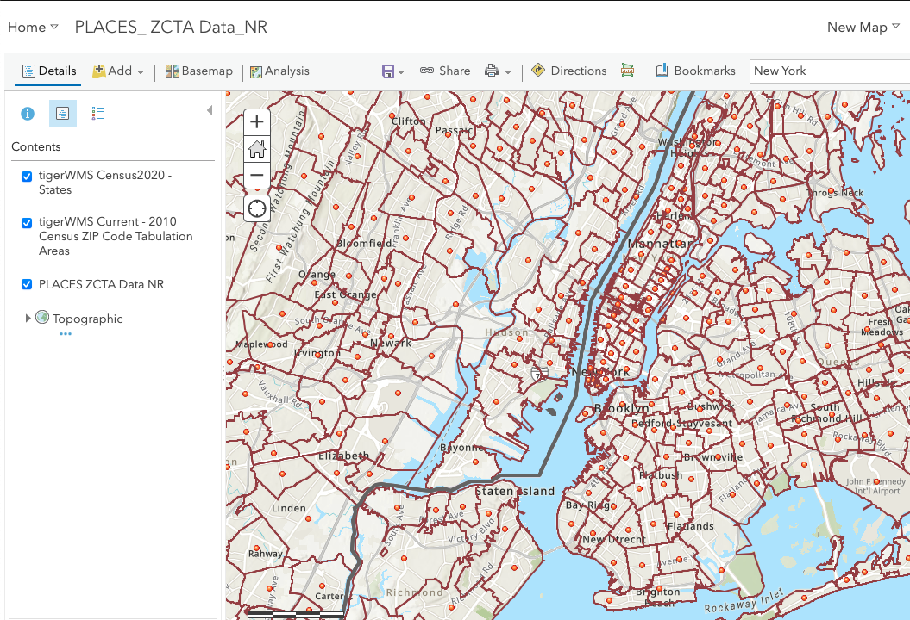
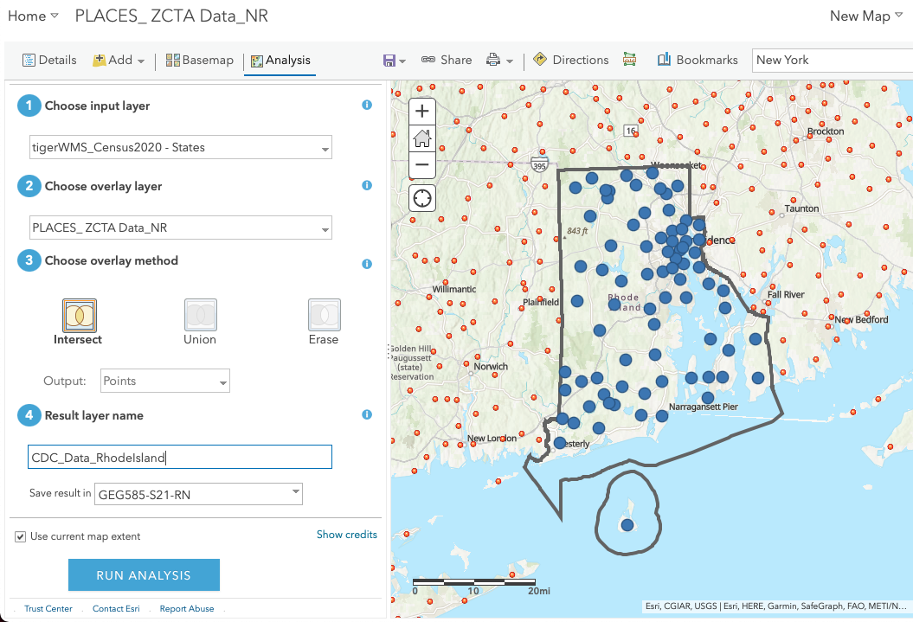
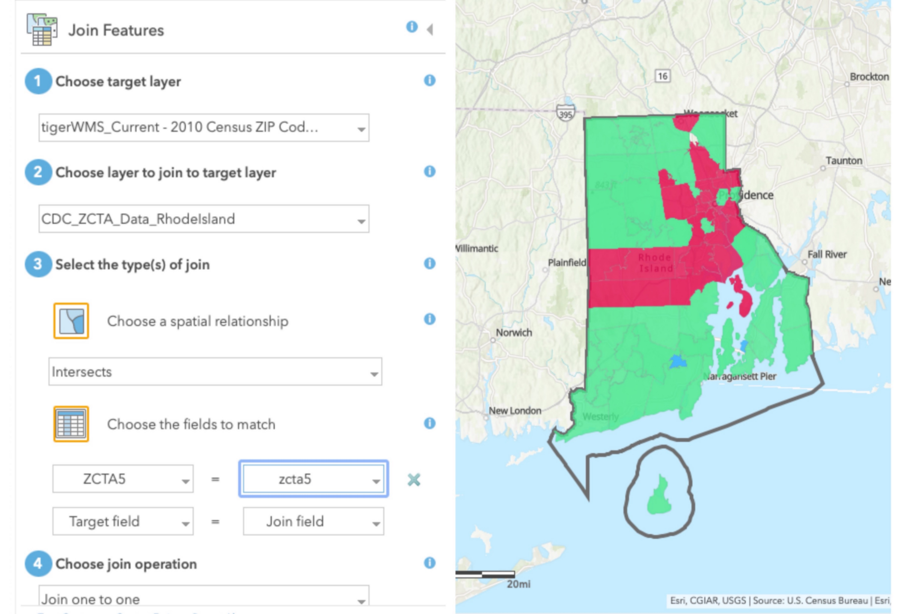

How health important?
Nowadays, so many people think they are pretty healthy and will never get sick. Are they think right? Beside the devoloped cities, even though a small state, Rhode Island, has not-so-great data.
MapsI wanna show you some information about health problems in Rhode Island. Futher more, I will introduce how did I create those maps.
Creation MethodAbout the map:

How important sleep is
Good sleep promotes good health. Sleep represents a third of every person’s life and it has a tremendous impact on how we live, function and perform during the other two-thirds of our lives. It is indeed as vital as the air we breathe and the food we eat, especially for those with chronic diseases or compromised immune systems. Sleep problems, whether in the form of medical disorders or related to work schedules and a 24/7 lifestyle, are pervasive. In America, 70% of adults report that they obtain insufficient sleep at least one night a month, and 11% report insufficient sleep every night.
Map-2
About the map:

High Cholesterol in the United States
In 2015–2016, more than 12% of adults age 20 and older had total cholesterol higher than 240 mg/dL, and more than 18% had high-density lipoprotein (HDL, or “good”) cholesterol levels less than 40 mg/dL.1. 93 million U.S. adults age 20 or older have total cholesterol levels higher than 200 mg/dL. Nearly 29 million adult Americans have total cholesterol levels higher than 240 mg/dL.3.
High cholesterol can be inherited, but it's often the result of unhealthy lifestyle choices, which make it preventable and treatable. A healthy diet, regular exercise and sometimes medication can help reduce high cholesterol.
Map-3
About the map:
Cervical Cancer
Cervical cancer used to be the leading cause of cancer death for women in the United States. However, in the past 40 years, the number of cases of cervical cancer and the number of deaths from cervical cancer have decreased significantly.
In recent years, the HPV test has been approved as another screening test for cervical cancer since almost all cervical cancers are caused by HPV (human papillomavirus). The HPV test looks for infection by high-risk types of HPV that are more likely to cause pre-cancers and cancers of the cervix.
Step One:
Adding Layer to Your Map:
The layer is the foundation of a map. Here we need import 3 types layers. The first layer contains the data you wanna show on the map. That's the main information your map can tell the users.
Base on these layer above, it contains 50 states and the model-based ZIP Code tabulation Areas (ZCTA) level estimated value. So the second layer gives us the state boundray to filer which state do we want to see.
This layer seperates the places by Zip Code as many polygons. Which gives us another way to see the data.
Step Two:
Overlay Layers:
You could filer which state do you want to choose in the state layer. This is base on your analysis. You can also select one or more cities or counties in the layer.
After we get the boundray of the places you chose just like the image shows above, what information we want to see is all in the boundray. So that, there is a good method called "Overlay layers" in the Analysis tag. It's used to merge bote the two layers to give your a single layer.
Step Three:
Join Features:
Finally, let the polygons replaces the points on your map. Joining the layer with polygons to your second layer which you just created. It could be joined by spacial relationship or choosing a field. Here I use both and choose the common variable ZCTA5 as the field.
Actually the data source is always influencing the results. We can see there are some empty area on the map. That means there are no data avaliable. Futher more, if there is a variable has huge value in the dataset, you may only see one single color shows on the map. Just like the first map above.